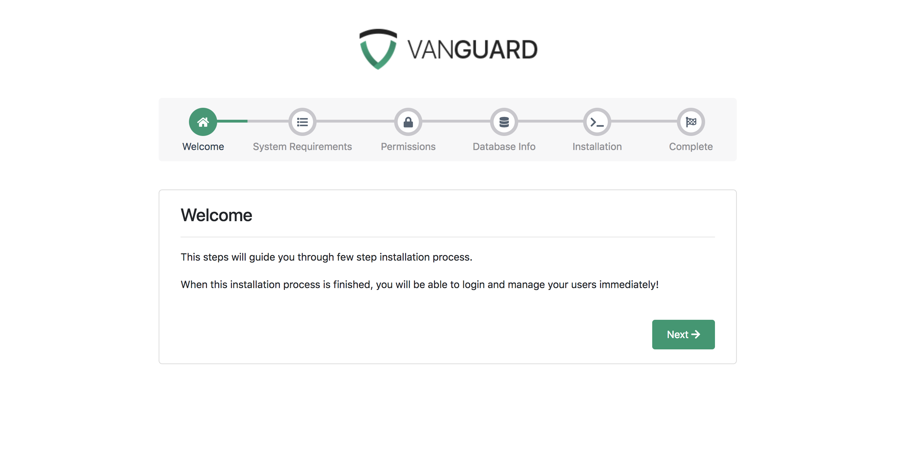
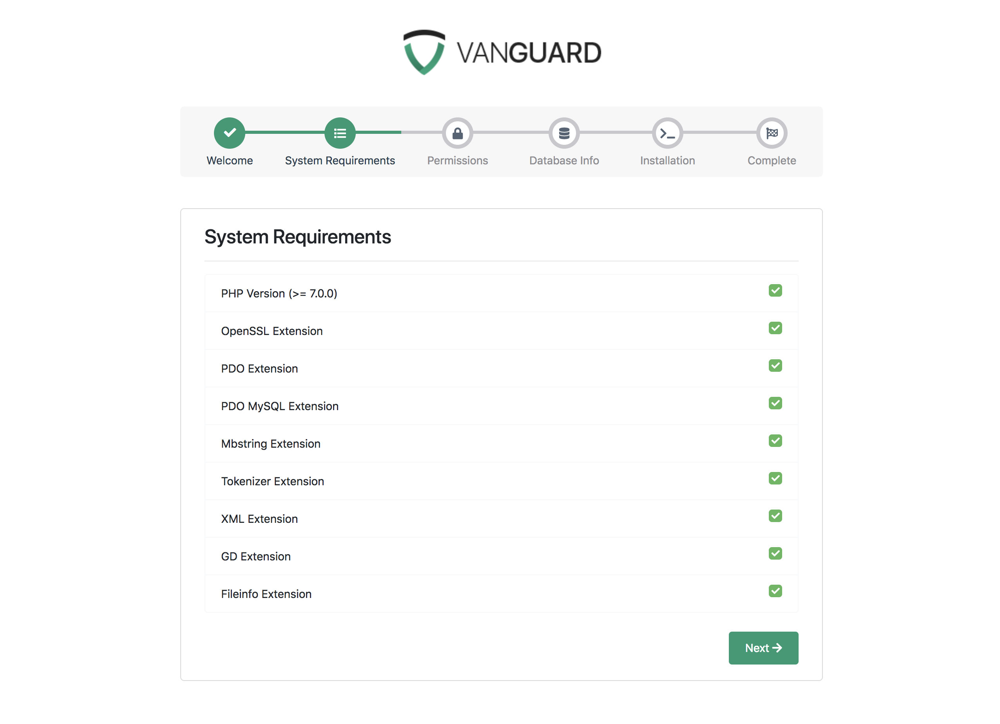
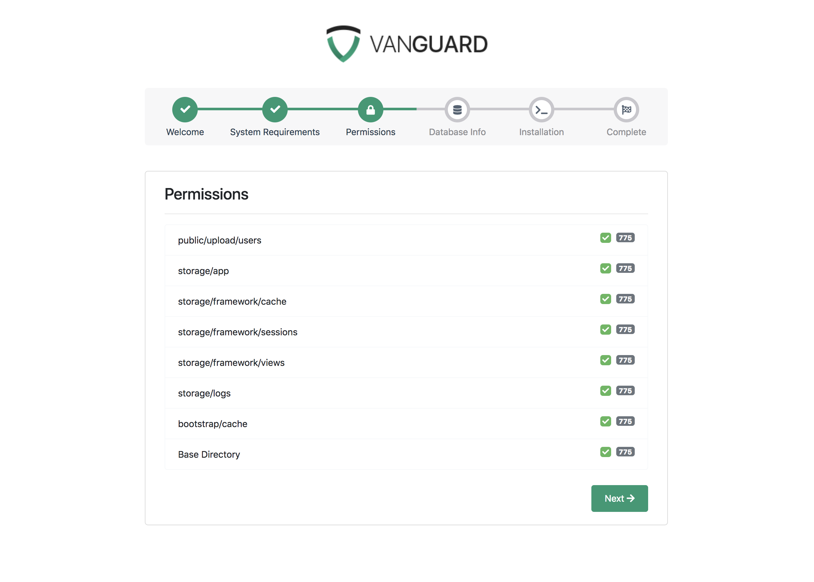
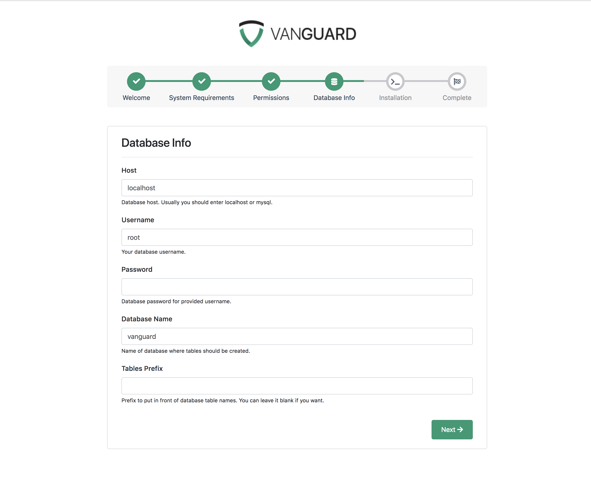
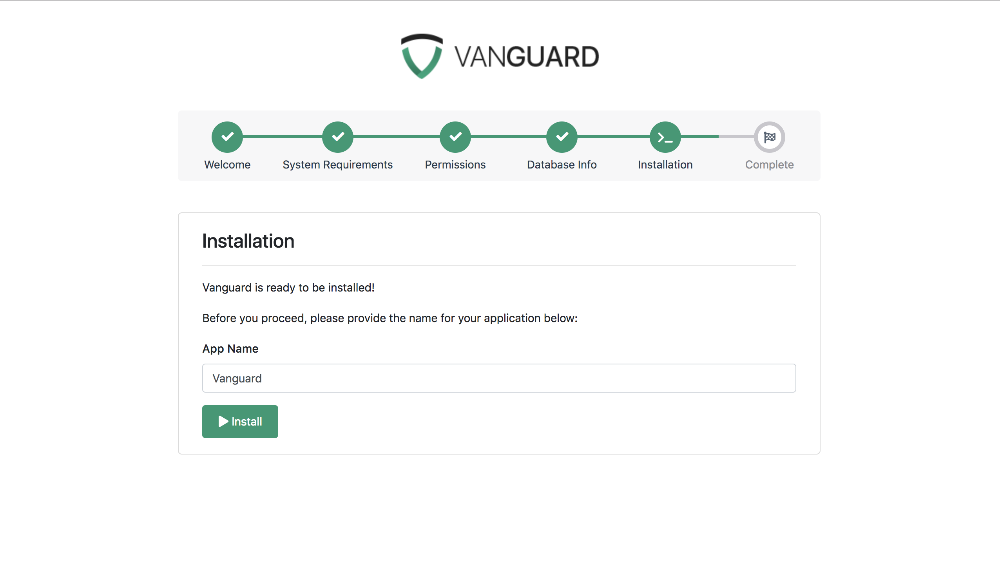
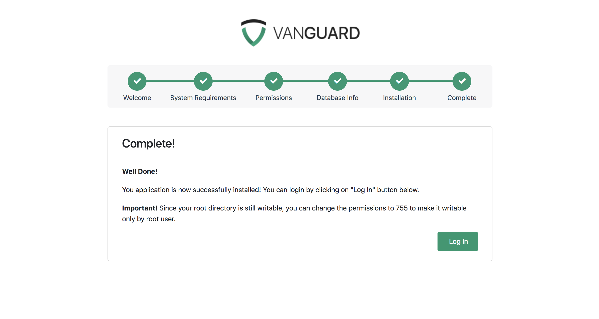

Installation
Installation
Server Requirements
In order to install Vanguard application, your server must meet following requirements:
- PHP >= 7.2.0
- OpenSSL PHP Extension
- PDO PHP Extension
- Mbstring PHP Extension
- Tokenizer PHP Extension
- XML PHP Extension
- Ctype PHP Extension
- JSON PHP Extension
- GD PHP Extension
- Fileinfo PHP Extension
- BCMath PHP Extension
- Xdebug Max Nesting Level (>= 500)
File System Permissions
To be able to start the installation at all, you must set appropriate permissions for storage folder and it's subfolders. So, the very first thing to do is to set permissions to 777 for storage folder, all it's subfolders as well as settings.json file.
After setting the permissions you are ready to proceed to the installation.
Installing Vanguard
After downloading the ZIP archive, and uploading it to your server, first thing you have to do is to create the database where system tables will be created. Let's say, you create the database called vanguard.
Step 1 - Welcome Screen
After creating the database next step is accessing the application URL from a browser. One thing you need to know is that Laravel is designed to allow HTTP access to the application from your public folder only. This means that Vanguard application will be available at yourdomain.com/public. It is good enough for installation and development purposes, however, for production you will probably want to have your application available at yourdomain.com. In next section I will show you how you can accomplish that.
Ok, since this is the first time that you are accessing the system, the installation wizard, will be displayed.

Note! If you get
500 Server Errorwhen you try to access the script installer, this usually means that yourstorage/directory is not writable and that Laravel is unable to compile views or start the session. To fix this, just update the permissions like it is described above.Note! If you are not able to access the website by accessing
yourdomain.com/public, but you are able to access it viayourdomain.com/public/index.php, this means that you probably don't have Apachemod_rewriteinstalled and enabled. You can find more info about fixing this issue here.
Step 2 - System Requirements
After clicking on "Next" button, you will be redirected to second step during the installation wizard, System Requirements.

In order to install the script, your system must have installed and enabled all PHP extensions listed on that second installation step.
Step 3 - Directory Permissions
After successfully enabling and installing all required PHP extensions, next step is to set the appropriate permissions for some system folders. All directories listed on the step 3 has to be writable by the application, as it is displayed on following picture.

After making all those directories writable by changing their permissions to 777 (or 775, if owner of your files is webserver user), you are ready to proceed to next step and insert your database credentials.
Step 4 - Database Info
On step 4 you have to fill in your database credentials and choose a prefix for your database tables if you want. Of course, you can leave prefix field empty if you don't want your database tables to be prefixed.

If you have any problems saying that Vanguard is unable to connect to your database, you can check error log inside storage/logs directory for more informations about the error.
Step 5 - Installation
After passing all those steps, you are now ready to install your application. If you want, you can change application name to something else by typing the application name here, before you press Install button.

Once you are ready, just press the Install button and installation process will start immediately. It should not take more than few seconds.
Step 6 - Complete Installation
Once application is successfully completed, you will see the last step from installation wizard, as per below

An default user will be created for you with following credentials:
username: admin password: admin123
Note! Since your root directory is still writable by the group, you should now change the permissions to
755and make it writable only by root system user. This is for security reasons.Note! Don't forget to change default user's credentials before you put the application to production!
Application URL
So, if you are wondering why your application is available only when you access the public folder of your website, the answer is relatively simple: because of security! This means that only your public folder should be accessible from the browser and that app, storage and other folders should not.
The best way to use your application in production is to change the document root inside nginx or Apache configuration files, to point to your public directory.
If you are using nginx, here is beginners guide that will let you know how you can change your document root to point to public folder, instead of root application folder.
On the other hand, if you are using Apache, there is good Stack Overflow answer to how you can change the document root to point to some other folder (public folder in our case). Also, you can create Apache Virtual Hosts (more info on this can be found here) that will allow you to point your application to serve files from public folder and leave your other applications on same server untouched.
But, what if you are hosting your application on some shared hosting and you are not able to change your document root? In that case, you will have to modify some application files.
Changing Application's Public Directory
Lets say that you want to upload your application to some shared hosting. Typically, there will be an public_html directory where you would upload your application since everything that's inside that directory will be accessible via HTTP. But, as it is already mentioned, it is not good from security standpoint.
Step 1 - Uploading the application
So, in this case, the best way is to upload Vanguard application into it's own folder that is one level above the public_html folder. In that case, your directory structure will look something like this:
.
..
/public_html
/some_other_folder
/VanguardIn this case, we have uploaded our whole Vanguard app into Vanguard folder that is on the same level as your public_html folder, and it is not accessible from your browser.
Step2 - Copying public files
Now you need to copy everything from Vanguard's public folder to public_html folder on your server (you can remove Vanguard/public folder after moving those files).
This will allow us to change the name and location of public folder for our application.
Step3 - Updating index.php file
The final step is to update the index.php file you have copied from public to public_html directory. So, go to public_html and edit index.php file and update it as following:
//update path to autoload.php file
require __DIR__.'/../Vanguard/bootstrap/autoload.php';
//update path to app.php file
$app = require_once __DIR__.'/../Vanguard/bootstrap/app.php';
//this line should be added right after previous line where $app variable
//is defined and it is used to tell Laravel where your public folder is now.
//Do not change it, just copy and paste it!
$app->instance('path.public', __DIR__);
//leave the rest unchangedAnd that's it, Vanguard application will now be available at yourdomain.com, and all application files will be secured.
Of course, if you want, you can place public Vanguard files (those files you have copied to public_html directory int Step 2) into any other folder/subfolder on your website, as long as you update the path to autoload.php and app.php files inside your index.php file.
Re-Installing The App
Lets say that you have installed Vanguard application, but, for some reason, you want to re-install it and start from scratch.
In that case, the easiest way is to just delete whole application and drop all DB tables and start the installation process again. However, in case that you have modified only one or two files, you don't have to delete and re-upload the whole app because of that.
You simply can replace those modified files with original files from zip archive, remove the database and remove .env file from Vanguard's root folder. The .env file is the key here, since Vanguard will check if that file exist on every request and, if file does not exist, you will be redirected to installation wizard automatically.